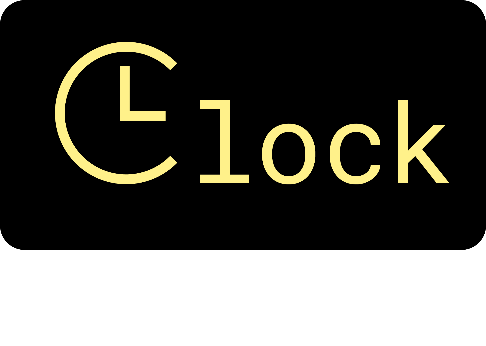

Clock
Sito web dove si può leggere l'ora in tempo reale.

Linguaggi di programazzione usati:
Softwer esterni usati:
Visita il sito:
https://fraconv.github.io/clock/
Creazione del logo
Per la creazione del logo ho scritto il nome del sito cioè "Clock" con il font Roboto Mono, con la particolarità che la lettera C iniziale del logo,
è stata realizzata per far ricordare la forma di un orologio analogico.

Color palette logo:
#fff18a
Il suo colore giallo richiama ottimismo e energia.
Design del sito:
Il design del sito è basato su uno stile molto minimal per via del contenuto che offre e per un esperienza pulita.
L'header comprende due elementi: il logo posizionato al centro e un pulsante animato per la dark mode sulla destra. Il footer comprende solo il copyright del sito.
Il body è strutturato con l'orario in tempo reale situato all'interno di una corinice smussata posizionata al centro della pagina.
L'orario comprende: ore, minuti e secondi.
Color palette header:
#6dbbdd
Color palette body:
#6dbbdd
Color palette footer:
#78c9ee
Font:
Il font utilizzato per questo sito è Roboto Mono.
Versione mobile:
Per la versione mobile è stato fatto un lavoro accurato di riposizionamento e ridimensionamento del logo e del pulsante della dark mode per impedire eventuali bug.